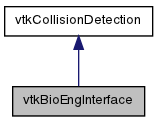

Interface to the vtkbioeng collision detection library. More...
#include <vtkBioEngInterface.h>
Inheritance diagram for vtkBioEngInterface:

Collaboration diagram for vtkBioEngInterface:

Public Member Functions | |
| vtkTypeRevisionMacro (vtkBioEngInterface, vtkCollisionDetection) | |
| Type revision macro. | |
| const char * | GetClassName () |
| Return class name. | |
| void | Init () |
| Set up the collision detection library with the initial values,. | |
| void | Update () |
| Update the collision detection library. | |
Static Public Member Functions | |
| static vtkBioEngInterface * | New () |
| Create new vtkbioeng interace. | |
Protected Member Functions | |
| vtkBioEngInterface () | |
| Default constructor. | |
| ~vtkBioEngInterface () | |
| Default destructor. | |
Protected Attributes | |
| vtkCollisionDetectionFilter * | DetectionFilter |
| Collision detection filter. | |
| vtkMatrix4x4 * | Matrix0 |
| Rotation matrix. | |
| vtkMatrix4x4 * | Matrix1 |
| Rotation matrix. | |
Detailed Description
Interface to the vtkbioeng collision detection library.
Member Function Documentation
| void vtkBioEngInterface::Init | ( | ) | [virtual] |
Set up the collision detection library with the initial values,.
This method will vary depending on the collision detection library
Implements vtkCollisionDetection.
| void vtkBioEngInterface::Update | ( | ) | [virtual] |
Update the collision detection library.
Executes the collision detection process between an tool and an organ
Implements vtkCollisionDetection.
The documentation for this class was generated from the following files:
- CollisionDetection/vtkBioEngInterface.h
- CollisionDetection/vtkBioEngInterface.cxx